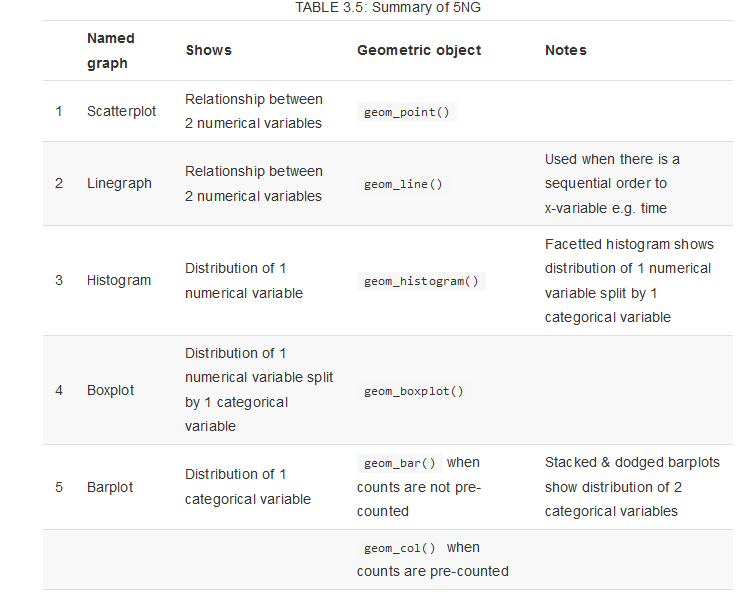

library(dplyr)
library(ggplot2)
library(readr)Problem Set 02: Data Visualization
This problem set will use the ggplot2 package to generate graphics. “The Grammar of Graphics,” is the theoretical basis for the ggplot2 package. Much like how we construct sentences in any language by using a linguistic grammar (nouns, verbs, etc.), the grammar of graphics allows us to specify the components of a statistical graphic.
Note
In short, the grammar tells us that:
A statistical graphic is a mapping of data variables to aesthetic attributes of geometric objects.
A graphic can be broken into three essential components:
data: the data-set comprised of variables that we plotgeom: the type ofgeometric objects visible in a plot (points, lines, bars, etc.)aes: aesthetic attributes of the geometric object that one perceives on a graphic. For example, x/y position, color, shape, and size. Each assigned aesthetic attribute can be mapped to a variable in our data-set.
Getting Set up
Directions
Type complete sentences to answer all questions in the Quarto document. Round all numeric answers you report to four decimal places. Use inline R code to report all numeric answers (i.e. do not hard code your numeric answers).
Remember to save your work as you go along. Click the floppy disk (save current document) button in the upper left hand corner of the Quarto source panel.
Once you have opened the document:
- Change the author field to your First and Last name (example,
author: "John Smith").
R Packages
R Packages are like apps on a cell phone - they are tools for accomplishing common tasks. R is an open-source programming language, meaning that people can contribute packages that make our lives easier, and we can use them for free. For this problem set, the following R packages will be used:
dplyr: for data wranglingggplot2: for data visualizationreadr: for reading in data
The above packages are already installed on Appalachian’s R Studio Server. Every time you open a new R session you need to load (open) any packages you want to use. Loading a package is done with the library() function.
Remember, “running code means” telling R “do this”. You tell R to do something by passing code through the console. You can run existing code many ways:
- re-typing code out directly in the console (most laborious method)
- copying and pasting existing code into the console and hitting enter (easier method)
- click on the green triangle in the code chunk (easiest method 1)
- highlight the code and select
Control-Enteron a PC orCommand-Returnon a Mac (easiest method 2)
The Data
Today, we will practice data visualization using data on births from the state of North Carolina. The code below reads a *.CSV file from a URL into the object nc.
The data set that displays in your Environment is a large data frame. Each observation or case is a birth of a single child.
The workspace area in the upper right hand corner of the R Studio window should now list a data set called nc with 800 observations (rows or cases) and 13 variables (columns).
How to Look at Data in R
Take a Glimpse
You can see the dimensions of this data frame (# of rows and columns), the names of the variables, the variable types and the first few observations using the glimpse function.
We can see that there are 800 observations and 13 variables in this data set. It is good practice to see if R is treating variables as factors <fct>; as numbers <int> or <dbl> (basically numbers with decimals); or as characters (i.e. text) <chr>. The variable names are fage, mage, mature, etc. The output from glimpse(nc) tells us that six of the variables are numbers with decimals (<dbl>). The other seven variables are character (<chr>).
The Data Viewer
By clicking on the name nc in the Environment pane (upper right window), the data is displayed in the Source pane (upper left window) in the Data Viewer. R has stored these data in a kind of spreadsheet called a data frame. Each row represents a different birth: the first entry or column in each row is simply the row number, the rest are the different variables that were recorded for each birth. You can close the data viewer by clicking on the x in the appropriate tab.
Instructions
It is a good idea to try render your document from time to time as you go along. Go ahead, and make sure your document is rendering, and that your html file includes Exercise headers, text, and code. Note that rendering automatically saves your *.qmd file too.
Types of Graphs
Three types of graphs are explored in this problem set:
- scatterplots
- boxplots
- histograms
Scatterplots
Scatterplots allow you to investigate the relationship between two numerical variables. While you may already be familiar with this type of plot, let’s view it through the lens of the Grammar of Graphics. Specifically, we will graphically investigate the relationship between the following two numerical variables in the nc data frame:
weeks: length of a pregnancy on the horizontal “x” axis andweight: birth weight of a baby in pounds on the vertical “y” axis
Let’s view this plot through the grammar of graphics. Within the ggplot() function call, we specified:
- The data frame to be
ncby settingdata = nc - The
aestheticmappingby settingaes(x = weeks, y = weight) - The variable
weeksmaps to thex-positionaesthetic - The variable
weightmaps to they-positionaesthetic
We also add a layer to the ggplot() function call using the + sign. The layer in question specifies the geometric object as points using geom_point().
Finally, we can also add axes labels and a title to the plot as shown below. Again we add a new layer, this time a labs or labels layer.
Histograms
Histograms are useful plots for showing how many elements of a single numerical variable fall in specified bins. This is a very useful way to get a sense of the distribution of your data. Histograms are often one of the first steps in exploring data visually.
For instance, to look at the distribution of pregnancy duration (variable called weeks), consider the following code:
A few things to note here:
- There is only one variable being mapped in
aes(): the single numerical variableweeks. You don’t need to compute they-aesthetic:Rcalculates it automatically. - We set the geometric object as
geom_histogram() - The warning message encourages us to specify the number of bins on the histogram, as
Rchose 30 for us.
We can change the binwidth (and thus the number of bins), and the colors as shown next.
Note that none of these arguments went inside the aesthetic mapping argument as they do not specifically represent mappings of variables.
Faceting
Faceting is used to create small multiples of the same plot over a different categorical variable. By default, all of the small multiples will have the same vertical axis.
For example, suppose we are interested in looking at whether pregnancy length varies by the maturity status of a mother (column name mature). This is what is meant by “the distribution of one variable over another variable”: weeks is one variable and mature is the other variable. In order to look at histograms of weeks for older and more mature mothers, add a plot layer using facet_wrap(~ mature, ncol = 1). The ncol = 1 argument tells R to stack the two histograms into one column.
R Code
ggplot(data = nc, aes(x = weeks)) +
geom_histogram(binwidth = 1, color = "blue", fill = "lightblue") +
facet_wrap(~ mature, ncol = 1) +
theme_bw()# Or
ggplot(data = nc, aes(x = weeks)) +
geom_histogram(binwidth = 1, color = "blue", fill = "lightblue") +
facet_wrap(facets = vars(mature), ncol = 1) +
theme_bw()
Boxplots
While histograms can help to show the distribution of data, boxplots have much more flexibility and can provide even more information in a single graph. The y aesthetic is the numeric variable you want to include in the boxplot, and the x aesthetic is a grouping variable. For instance, below gender is the aesthetic mapping for x, and gained is the aesthetic mapping for y. This creates a boxplot of the weight gained for mothers that had male and female newborns. Note that the fill argument is not necessary, but sets a color for the boxplots.
Review
For review, these are the different parts of the boxplot: ’
- The bottom of the “box” portion represents the 25th percentile (1st quartile)
- The horizontal line in the “box” shows the median (50th percentile, 2nd quartile)
- The top of the “box” represents the 75th percentile (3rd quartile)
- The height of each “box”, i.e. the value of the 3rd quartile minus the value of the 1st quartile, is called the interquartile range (IQR). It is a measure of spread of the middle 50% of values. Longer boxes indicating more variability.
- The “whiskers” extending out from the bottoms and tops of the boxes represent points less than the 25th percentile and greater than the 75th percentiles respectively. They extend out no more than 1.5 x IQR units away from either end of the boxes. The length of these whiskers show how the data outside the middle 50% of values vary. Longer whiskers indicate more variability.
- The dots represent values falling outside the whiskers or outliers. The definition of an outlier is somewhat arbitrary and not absolute. In this case, they are defined by the length of the whiskers, which are no more than 1.5 x IQR units long.
More Practice
For the following, determine which type of plot to use, make the plot and answer any questions with text. There is a table at the end of this document that can help you determine which plot to use given the question/types of variables.
Data Visualization Table
This table is a great resource for thinking about how to visualize data.

Table 3.5 from Modern Dive
Turning in Your Work
You will need to make sure you commit and push all of your changes to the github education repository where you obtained the lab.
Tip
- Make sure you render a final copy with all your changes and work.
- Look at your final html file to make sure it contains the work you expect and is formatted properly.
Logging out of the Server
There are many statistics classes and students using the Server. To keep the server running as fast as possible, it is best to sign out when you are done. To do so, follow all the same steps for closing Quarto document:
Tip
- Save all your work.
- Click on the orange button in the far right corner of the screen to quit
R - Choose don’t save for the Workspace image
- When the browser refreshes, you can click on the sign out next to your name in the top right.
- You are signed out.
sessionInfo()R version 4.2.3 (2023-03-15)
Platform: x86_64-pc-linux-gnu (64-bit)
Running under: Red Hat Enterprise Linux 9.2 (Plow)
Matrix products: default
BLAS/LAPACK: /usr/lib64/libopenblasp-r0.3.21.so
locale:
[1] LC_CTYPE=en_US.UTF-8 LC_NUMERIC=C
[3] LC_TIME=en_US.UTF-8 LC_COLLATE=en_US.UTF-8
[5] LC_MONETARY=en_US.UTF-8 LC_MESSAGES=en_US.UTF-8
[7] LC_PAPER=en_US.UTF-8 LC_NAME=C
[9] LC_ADDRESS=C LC_TELEPHONE=C
[11] LC_MEASUREMENT=en_US.UTF-8 LC_IDENTIFICATION=C
attached base packages:
[1] stats graphics grDevices utils datasets methods base
other attached packages:
[1] readr_2.1.4 nycflights13_1.0.2 dplyr_1.1.2 ggplot2_3.4.3
[5] knitr_1.43
loaded via a namespace (and not attached):
[1] pillar_1.9.0 compiler_4.2.2 tools_4.2.2 bit_4.0.5
[5] digest_0.6.33 jsonlite_1.8.7 evaluate_0.21 lifecycle_1.0.3
[9] tibble_3.2.1 gtable_0.3.4 pkgconfig_2.0.3 rlang_1.1.1
[13] cli_3.6.1 rstudioapi_0.15.0 parallel_4.2.2 yaml_2.3.7
[17] xfun_0.40 fastmap_1.1.1 withr_2.5.0 generics_0.1.3
[21] vctrs_0.6.3 htmlwidgets_1.6.2 hms_1.1.3 bit64_4.0.5
[25] grid_4.2.2 tidyselect_1.2.0 glue_1.6.2 R6_2.5.1
[29] fansi_1.0.4 vroom_1.6.3 rmarkdown_2.24 farver_2.1.1
[33] tzdb_0.4.0 magrittr_2.0.3 scales_1.2.1 htmltools_0.5.6
[37] colorspace_2.1-0 labeling_0.4.2 utf8_1.2.3 munsell_0.5.0
[41] crayon_1.5.2